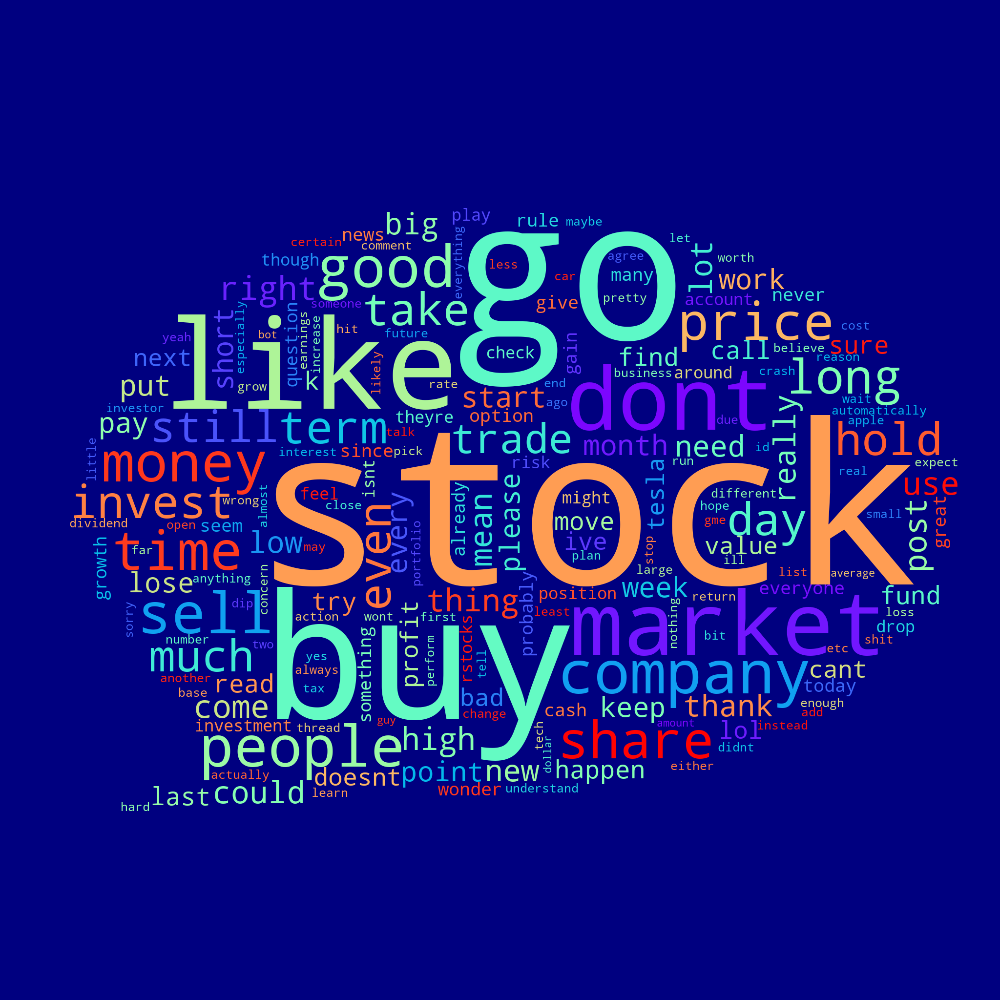
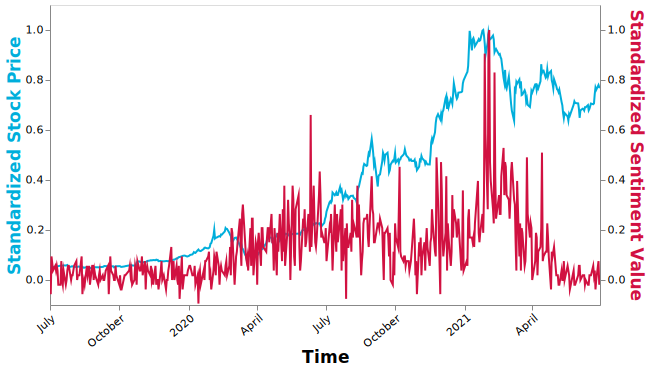

Conclusion
If someone is interested in stocks or investment, stock subreddit would be a good place to get some useful information. In the stock subreddit, people talk about latest news about stocks, share their opinions about the market trend, and even recommend stocks to others. However, tremendous and diverse comments make it hard and time-consuming for a person to gain some general insights from this community. In order to solve this problem and provide some useful insights about stock market, I analyzed stock subreddit comment dataset using big data tools like Spark and S3 (data is collected from July 2019 to June 2021). By exploratory data analysis, natural language processing, and machine learning methods, I got some practical and interesting results from the stock subreddit data (more than 2 million data points).

Figure 1 Stock Subreddit Comment Dataset
1. Exploratory Data Analysis
Specifically, in exploratory data analysis, top 10 stocks mentioned are identified, which include Game Stop, Tesla, DuPont, etc. There are three big companies in these top 10 stocks mentioned (Tesla, Apple, and Microsoft), while there are still 7 small companies with low market value, which may be the opportunities for investors. Also, popular industries mentioned are healthcare, Finance, Technology, and Consumer Service. More specifically, biotechnology pharmaceutical preparation, real estate investment trusts, EDP services, prepackaging software are mentioned most in terms of industries. In terms of region, most stocks mentioned in the forum are in United States, followed by Canada, China, and Israel. There are more than 60 stocks of Israel are mentioned, which is surprising.
Figure 2 Top 10 stocks mentioned in Reddit
Figure 3 Top sectors mentioned in Reddit
2. Natural Language Processing
Natural language processing is necessary in this case since most data is textual. From the TF-IDF (term frequency-inverse document frequency) word-count results, we find that “buy” is mentioned much more than “sell”, which may indicate people’s optimism about the stock market during July 2019 to June 2021. Also, sentiment analysis shows that DuPont is more worthwhile to invest than AMC because most people feel positive about the former but feel negative about the latter. From the overall sentiment values of comments, people seem feel better during the period from March 2020 to March 2021 than the period before March 2020. To dive the analysis further, sentiment values and stock price of Tesla are compared, and the trend of them is very similar. The analysis shows the possibility to use sentiment values of comments in stock subreddit to predict the stock price.

Figure 4 Word Cloud of Stock Subreddit Comments (based on counts)
Figure 5 Sentiment Analysis for Top 20 stocks mentioned in Stock Subreddit

Figure 6 Sentiment and Stock Price Change for Tesla
3. Machine Learning
In Reddit, users can upvote or downvote, and follow others’ comments, which reflects the popularity of a comment. There are many factors that would affect the upvotes and follows, and it is meaning to for users to know which factors play important roles in this case. To dive into this question, machine learning methods are used. Specifically, linear regression model, decision tree regression model, and gradient-boosted trees are used in comment score (upvote - downvote) prediction, and logistic regression model, decision tree model, and gradient-boosted trees are applied in the classification of the follow (whether the comment is followed by others). For the scores of comments, gilds (the number of times this comment received reddit gold) and awards received of the comment, and whether the comment is submitted by the author who posted the original discussion are most important factors. For the follow of comments, more factors are significant. Besides features that matter in comments’ scores, whether the comment is sticked, whether the author is premium, and whether the comment is post on weekend are also needed to consider.
Figure 7 Feature Importance in Score Prediction Model Figure 8 Feature Importance in Follow Classification Model
4. Discussion and Prospect
Overall, the stock subreddit comment analysis provides some general insights about stock market and practical suggestions for investors. However, it would be better to narrow down the scope of analysis further and get more detailed findings. In the future, I plan to focus on the Tesla comment analysis. It would be interesting to check the key words when people mentioned Tesla, and use features extracted from comments to predict its stock price.
Copyright © ZhibaoLi, Graduate of Data Science and Analytics, Georgetown University. All rights reserved.